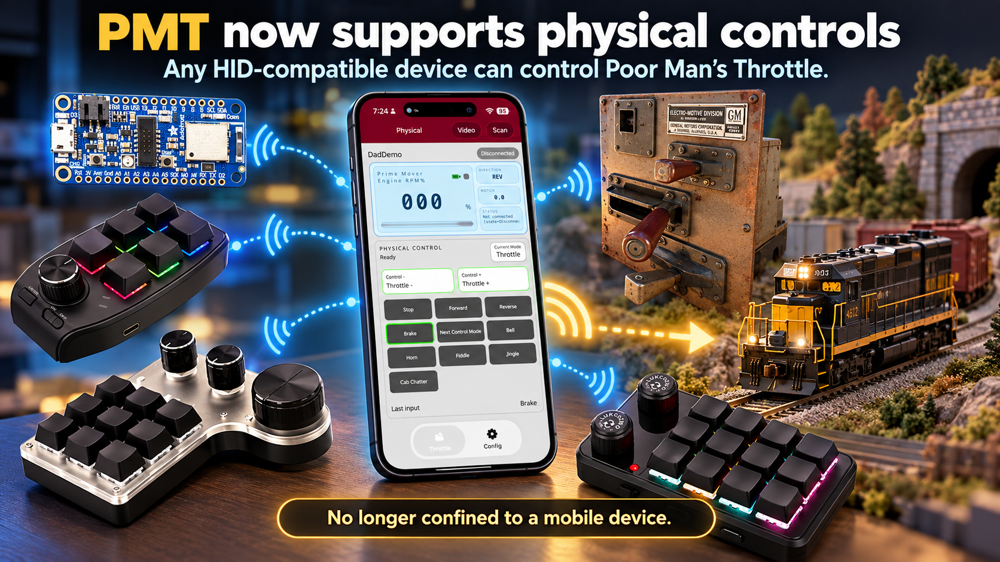
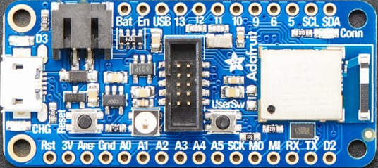
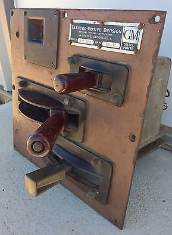
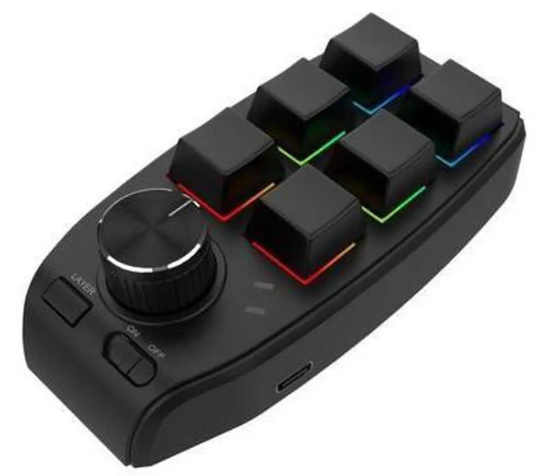
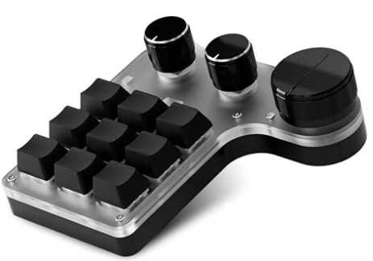
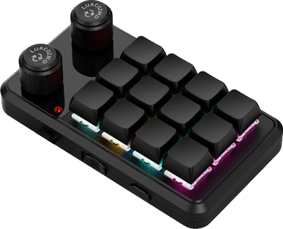
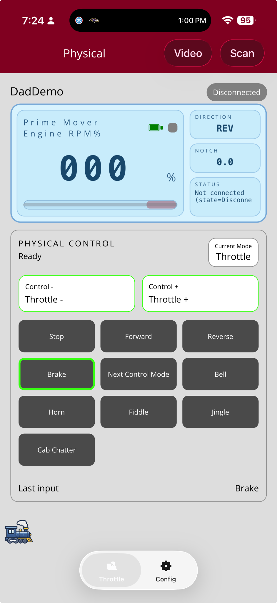

Operate the railroad your way
Run PMT with a physical controller instead of touch-only operation. That can make the experience feel more tactile, more natural, and more immersive for users who want hardware they can grab, twist, press, and throw.
PMT now supports physical throttles — all wirelessly over Bluetooth Low Energy (BLE). You can keep using your phone or tablet, or add real buttons, knobs, switches, and throttle controls for a more hands-on operating experience without tethering the controller to the train.

There are users who would rather operate with a real device in their hands than rely only on a phone or tablet. They want actual buttons, real knobs, and physical switches. Now PMT supports that too.
Run PMT with a physical controller instead of touch-only operation. That can make the experience feel more tactile, more natural, and more immersive for users who want hardware they can grab, twist, press, and throw.
Physical controllers connect to PMT over Bluetooth Low Energy (BLE). That means you can walk with the throttle, operate from around the layout, and keep the experience fully wireless.
If it is HID compatible — the same standard used by keyboards, game controllers, and button pads — it can control PMT. The controller talks to PMT wirelessly using Bluetooth Low Energy (BLE), so your physical controls stay untethered while you operate.
A custom physical throttle can be as simple or as elaborate as you want. An inexpensive Adafruit HID interface can connect your own buttons, knobs, switches, and throttle hardware locally, then send those controls wirelessly to PMT over Bluetooth Low Energy (BLE).


Want a classic locomotive-style control stand? A custom desktop throttle? A panel full of labeled railroad controls? PMT can now be the software side of that vision.
You do not have to build anything from scratch. There are thousands of ready-made Bluetooth HID controllers on the market, from compact wireless button decks to larger knob-and-switch control surfaces.



Buy a compatible device, connect it, map the buttons, and start running trains with real hardware in the loop.
Start simple today, then move to more advanced controllers or even a fully custom throttle as your ideas evolve.
PMT includes a dedicated Physical Control screen so you can see your mapped functions, current control mode, and the most recent input while your controller communicates wirelessly over BLE.

PMT does not force you to choose between mobile and physical control. Use the app when that makes sense, use a hardware controller when that feels better, or mix both together as part of the same session.
That flexibility is exactly what makes this feature so powerful.
A simple wireless controller, a macro pad, a desktop panel, a custom EMD throttle, or something nobody has thought of yet — PMT now supports the physical side of operation. This is a big step for users who want their railroad controls to feel as real and hands-on as the railroad itself.
Use something you can buy today or build the exact throttle you have always wanted.
Pair a compatible Bluetooth HID controller and make it part of the PMT operating experience over BLE.
Assign buttons, knobs, switches, and controls to the train functions you use most.
Operate with real physical hardware and make PMT feel even more like your railroad.